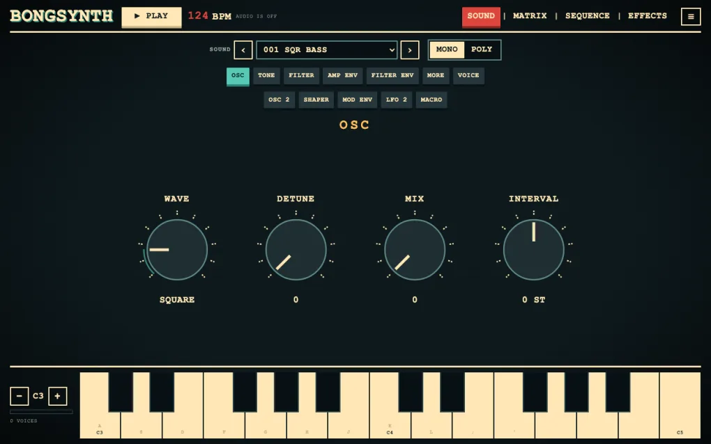

GhettoMachine / BongWare firmware
BongSynth
The voice behind GhettoMachine’s three instrument tracks. Two oscillators, a sub, noise, a drive and a filter per voice, sixteen voices shared between the tracks, and the same C running in your browser.

On this page
01 / Architecture
From key to speaker
A pad, the sequencer, the arpeggiator and the 303 generator all reach the synth through the same call: a note, a velocity, a gate length and two marks, slide and accent. Work happens in blocks of 32 samples at 44.1 kHz. A control tick runs the envelopes, glide and modulation for every voice, then the voices render, then the tracks mix.
- 01Note from pad, step or arp
- 02Control tick: envelopes, glide, matrix
- 03Voices render in two halves
- 04Track insert, mix, reverb + delay sends
02 / Sound generation
One analog-style voice
Each voice is the ANALOG engine from Felucca-Engines by Leo Kuroshita, Hügelton Instruments (MIT): two band-limited oscillators, a sub, noise, drive, and a trapezoidal state-variable filter. GhettoMachine plays it through a host of its own.
- OSCOscillators
- Saw, square, triangle, sine, PWM, hard sync or sub as the wave, with detune, a mix between the two and an interval of ±24 semitones for the second.
- TONEBody
- A sub oscillator, noise, pulse width and drive ahead of the filter.
- FILTERFilter
- Low-, band- or high-pass, with cutoff, resonance, an envelope amount of ±64 and key tracking.
- ENVEnvelopes
- An ADSR for the amp and one for the filter, each stage from 1 ms to 5 seconds.
03 / Shared work
Sixteen voices, three tracks
The three instrument tracks share one pool of sixteen voices. A poly track takes up to its voices setting from the pool. A mono track keeps one note, uses voices as a unison stack, spread across the stereo field, and keeps the held keys as a stack to fall back down. Legato chooses when it glides: always while a voice still sounds, or only into a tied note, as a 303 does.
When the pool is full, a new note takes the quietest voice that is already letting go, or else the oldest. When the CPU runs short, the firmware lowers the pool size (shedding) rather than missing an audio deadline.
04 / Modulation
The synth update
Project format 2 added 38 parameters to the original 26. Older sounds load with them at their defaults, so they play as they always did.
- Osc 2Its own wave, FM and ring modulation from it, and drift.
- ShaperFold, clip, rectify or crush, before or after the filter.
- Mod env + LFO 2A third envelope and an LFO for each note, with fade-in.
- MatrixSix slots: 12 sources, 17 destinations, four macros.
The matrix sources include LFO 1 (the track’s), LFO 2 (each note’s), the three envelopes, velocity, the note, a random value per note and the four macro knobs. Destinations run from pitch and cutoff to pan and LFO 2’s own rate.
05 / Library
129 factory sounds
- GhettoMachine 0.2
- 24 soundsBasses, leads, pads, keys and FM tones from the first release.
- Motor City
- 21 soundsMono basses and leads, keys, bells and pitched percussion.
- House · Electro · Warehouse · Dub
- 21 sounds eachOlder factory patches may include COLOR metadata. It does not control processing in the current browser instrument.
06 / Browser instrument · v0.2.2
The same synth engine, one track
The browser instrument runs the firmware’s synth engine in WebAssembly and plays one instrument track in an AudioWorklet at a fixed 44.1 kHz. It includes a 16-step sequencer with accent and slide. The voice then goes through track pan and volume to the output, without a Color insert, reverb or delay.
Choose a preset and hold Audition in SOUND. Use the oscillator and envelope displays to see what your edits change. KEYS opens the playable piano; SEQ edits notes, accents and slides; MTX routes modulation; and MIX contains a track LFO page (shape, rate, depth and destination) and a mix page (pan and volume). The voice waveshaper remains in SOUND → SHAPER. The menu imports and exports individual sounds as text.
The browser build is one track, not the whole firmware. To play all four tracks, the scenes and the sampler, use the GhettoMachine emulator.